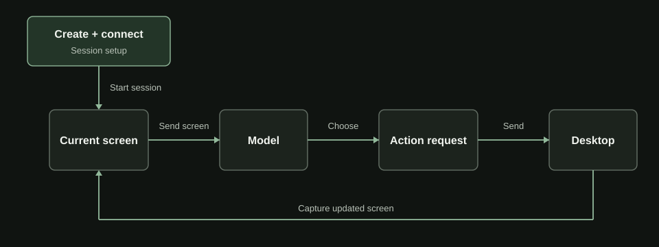
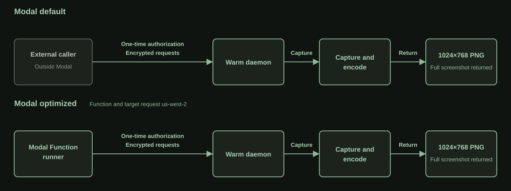
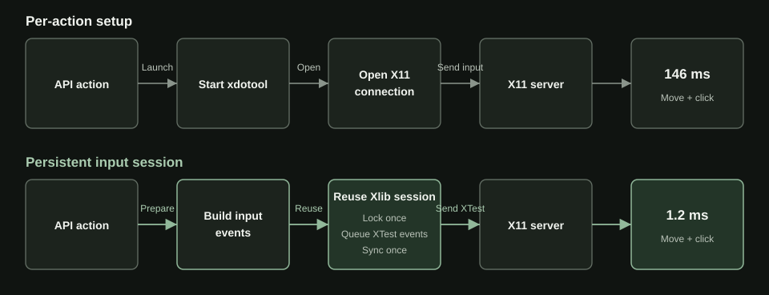
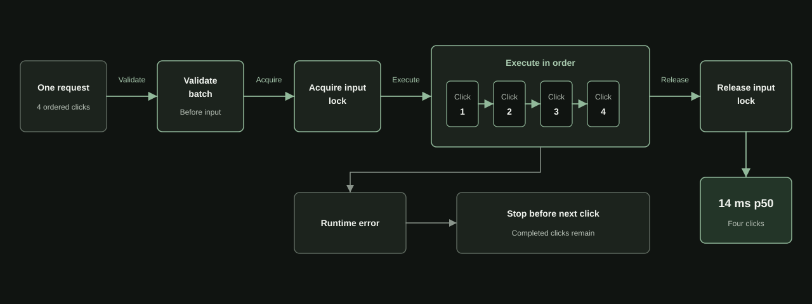
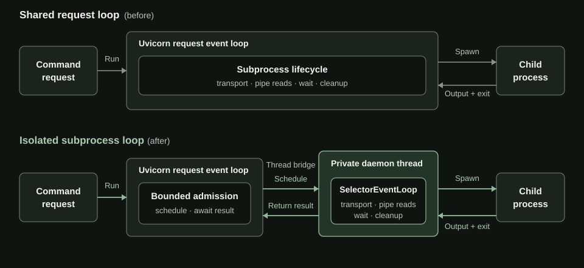
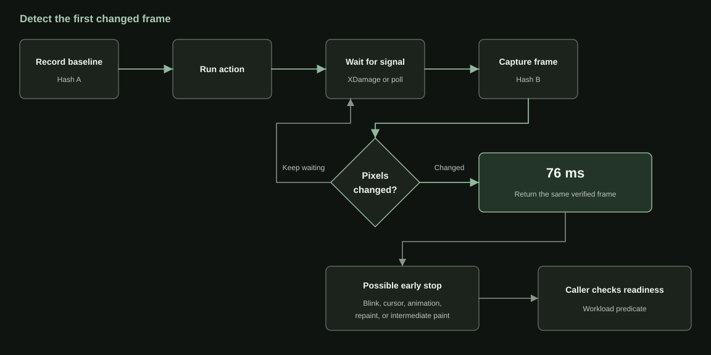

How I got computer-use clicks to 10 ms on Modal
The same warm path returns a full 1024x768 PNG in 29 ms.
The first computer-use loop I built on Modal took about 550 ms to look at the screen and click once. The E2B and Daytona defaults took about 420 ms and 480 ms. I built the Modal path myself from lower-level primitives, which let me move the caller and rewrite the daemon as I traced it. Where did the half-second go?
A fifty-turn loop with one screenshot and one click pays the 550 ms delay fifty times. Averaged across the three baseline paths, that comes to roughly 24 seconds of waiting around the model. After the improvements, the optimized Modal path I built does the same fifty-turn loop in under 2 seconds.
OpenAI says GPT-5.6 Sol on Cerebras can generate up to 750 tokens per second. At that speed, hundreds of milliseconds in the computer interface no longer hide behind slow generation. Longer trajectories make the gap worse because the user pays it on every turn before getting the result.
RustDesk, an open-source remote desktop system, taught me to separate connection setup from repeated traffic. It pays discovery and connection setup when a session begins, then reuses the live path for screen updates and input. Moving the mouse does not rediscover the remote computer. I started tracing one warm agent turn to find setup work that was still happening every time the agent looked at the screen or touched it.

E2B and Daytona expose ready-made computer-use primitives, and I benchmarked their documented defaults. Modal starts lower in the stack. Its Function and Sandbox primitives let me change the route to the desktop and rewrite the code touching X11 in the same Python-defined system. I wanted to see whether that control could beat the purpose-built defaults.
Was the tunnel slow, or was the caller far away?
My first trace began outside Modal. The client sent each request through an attested HTTP tunnel to a warm daemon inside the desktop Sandbox. A full 1024x768 PNG took 230 ms p50. I needed to separate time spent reaching the desktop from time spent capturing it.
To isolate caller placement, I reran both arms through Connect and moved only the caller. In the same run, one move-and-click fell from 32.4 ms outside Modal to 4.6 ms from a Modal Function. Moving the caller removed about 28 ms from the same request.
The end-to-end optimized path changed caller placement and ingress together. I isolated ingress with a second A/B from one Function to one warm target, alternating Connect and the attested tunnel across 30 requests per arm. The winner flipped between runs, the largest gap was 1.24%, and every request succeeded.
Caller placement was the useful lever. I moved the screenshot client into a Modal Function and requested us-west-2 for both the Function and Sandbox. The request still crossed authenticated ingress, but it no longer started from my laptop. In the final provider run, the full PNG returned in 29 ms p50. Connect and the attested tunnel were effectively tied, so I kept the attested tunnel already used by the general client. A shared requested region does not imply the same availability zone, host, or private network.

In production, a deployed Function receives a credential-free ComputerSessionHandle, opens one authenticated client, and reuses it for the trajectory. The application still owns the desktop and keeps competing trajectories off it.
Why did every screenshot start a process?
With the request route shortened, I traced the work inside the screenshot handler. Every frame launched a command-line program, wrote a temporary PNG, reopened it, and returned its bytes. That is fine for a one-off utility. An agent takes a screenshot after nearly every action.
The RustDesk lesson applied one layer lower. The desktop and X11 display stayed alive, but every screenshot discarded its capture state and rebuilt the path to the pixels.
X11 is the display server that owns the desktop's pixels. MSS became the persistent capture client: the daemon opens it once at startup and reuses it. On Linux, XShm lets the X server write the frame into a shared-memory buffer. Each request can encode that frame as a PNG without starting a child process or touching the filesystem.
MSS still has two escape hatches. It cannot compose the X11 cursor, so cursor-visible screenshots use the file path. If its display connection fails, the daemon reopens it once, then falls back to file capture. The usual cursor-hidden frame stays in memory.
The usual cursor-hidden request now reads the current frame from the long-lived session and encodes it in memory. Process startup and temporary files stay out of the recurring path.
A process for every click
On a local computer, a click feels atomic. X11 sees a short sequence: move the pointer, press a button, release it. My first implementation asked xdotool, a command-line X11 automation program, to produce that sequence. Every API action started a process, opened a display connection, sent the events, and exited.
The event mechanism was already fast. xdotool itself uses XTest, the X11 extension for synthetic keyboard and mouse events, together with Xlib. The process around it was slow. I removed the command-line boundary and opened one Xlib connection when the daemon started. Each request now builds its XTest events in memory, takes one input lock, queues the sequence, and synchronizes with the X server once at the end.

Inside the daemon, the mean for a pointer move followed by one left click fell from about 146 ms to 1.2 ms, a 128x speedup. Four move-and-click pairs took 4.8 ms instead of 444 ms.
Typing improved less because every character still expands into key-down and key-up events. The daemon-side mean for one hundred characters dropped from about 120 ms to 21 ms. One thousand dropped from 607 ms to 201 ms.
Those daemon-side means isolate XTest from xdotool. The provider table later reports p50 for a separate end-to-end run on the final zero-delay typing configuration.
The persistent session also owns keyboard state. On a US layout, A requires Shift plus a, while @ requires Shift plus 2; another layout may choose different keys. The daemon reads the active XKB map and builds the right key sequence. It holds the input lock throughout, so a second request cannot type while the first has Shift held or a mouse button down.
The first emitted event creates the retry boundary. Before it, the daemon can safely use the default xdotool path if XTest is unavailable. After it, replaying the request could type a character twice or click twice, so the daemon returns the failure without fallback. It also contains Xlib errors instead of letting one bad request terminate the process.
Four clicks, one request
Making one local click take about a millisecond exposed the next repeated cost: asking for it over HTTP. Models can already return several ordered actions in one turn. OpenAI's computer tool, for example, returns them in an actions[] array and asks the client to execute them in order. Turning that array into separate requests gives the transport more work than the desktop.
The SDK keeps the model's sequence intact:
computer.actions.run([
{"type": "click", "x": 100, "y": 100},
{"type": "click", "x": 300, "y": 100},
{"type": "click", "x": 300, "y": 300},
{"type": "click", "x": 100, "y": 300},
])
The daemon validates the batch before touching the desktop and holds the input lock while it executes each click in order. If click three fails, the response records clicks one and two and never sends click four. The same lock prevents another request from moving the pointer between a button press and release.

In a matched 30-sample A/B, one four-click request took 11.5 ms p50. Sending the same four clicks as sequential requests took 26.8 ms. The desktop performed the same work in both arms, which isolated the request shape.
Why did command p95 jump to 249 ms?
Once screenshots and clicks were taking tens of milliseconds, the command distribution looked wrong. The median was 56 ms, but p95 jumped to 249 ms even though the command already ran in a child process. Process separation had not moved the whole lifecycle away from the HTTP server. Uvicorn's event loop still managed the child's pipes, wait state, and cleanup, so a slow subprocess could hold up unrelated requests.
I moved the subprocess lifecycle onto a private SelectorEventLoop running on a daemon thread. A bounded queue caps outstanding work, and cancellation terminates the child's process group before releasing capacity. The HTTP loop only receives the result. Command latency fell to 9.9 ms p50 and 10.6 ms p95.

The clipboard exposed a stranger version of the same ownership bug. Agents use it to paste a command into a GUI terminal, put a long block into an editor, or fill a field without synthesizing hundreds of key events. Under X11, the clipboard is a selection owned by a client process. When another application pastes, X11 asks that owner to provide the data. This is why xclip leaves a small process alive after a write.
My generic subprocess helper captured stdout and stderr. The long-lived selection owner inherited both pipes, so communicate() waited for EOF after the clipboard had changed. Clipboard writes never used those streams. Sending them to DEVNULL let the request return while xclip stayed alive for the eventual paste. This fixed clipboard writes as a separate primitive; the typing numbers below come from direct XTest keystrokes.
Modal optimized was up to 650x faster than the tested default paths
A full screenshot returned in 29 ms, and one click took 10 ms. All six warm operations finished below 64 ms p50.
The 650x ceiling came from typing 1,000 characters: 63 ms with zero-delay XTest versus 41,049 ms through E2B's public default. E2B's SDK does not expose its internal pacing, so 648x describes those two public behaviors.
| Warm operation | Modal optimized p50 / p95 | Modal default in this library p50 / p95 / ratio | Daytona default p50 / p95 / ratio | E2B default p50 / p95 / ratio | Tzafon default p50 / p95 / ratio |
|---|---|---|---|---|---|
| Full screenshot, provider-native format | 28.69 / 43.96 ms | 229.94 / 235.78 ms / 8.02x | 264.85 / 297.67 ms / 9.23x | 212.75 / 225.28 ms / 7.42x | 146.14 / 168.34 ms / 5.09x |
| One click on the screen | 9.69 / 15.55 ms | 323.81 / 331.35 ms / 33.43x | 216.04 / 221.02 ms / 22.31x | 210.56 / 214.88 ms / 21.74x | 125.75 / 127.92 ms / 12.98x |
| Four ordered clicks | 13.64 / 21.98 ms | 342.68 / 349.16 ms / 25.12x | 865.55 / 1,061.66 ms / 63.45x | 855.81 / 876.02 ms / 62.74x | 455.96 / 531.37 ms / 33.42x |
| Type 100 characters | 15.27 / 20.69 ms | 379.28 / 389.18 ms / 24.84x | 638.50 / 706.86 ms / 41.81x | 4,090.74 / 4,194.92 ms / 267.86x | 82.27 / 85.45 ms / 5.39x |
| Type 1,000 characters | 63.34 / 83.91 ms | 378.40 / 413.17 ms / 5.97x | 5,356.25 / 5,425.81 ms / 84.57x | 41,048.75 / 41,619.86 ms / 648.12x | 181.03 / 212.66 ms / 2.86x |
| Non-login shell command | 9.54 / 17.03 ms | 182.43 / 346.47 ms / 19.12x | 116.92 / 120.86 ms / 12.26x | 52.18 / 54.35 ms / 5.47x | 29.60 / 30.84 ms / 3.10x |
Modal supplies the infrastructure. The Modal default column uses the simplest public computer-use configuration in this library. I tuned only the Modal optimized path. Daytona, E2B, and Tzafon use their defaults from the pinned harness. The screenshot row uses each path's native format: Tzafon returned a 1280x720 JPEG, while Modal, Daytona, and E2B returned a 1024x768 PNG.
Request shape explains much of the four-click row. Modal optimized, Modal default, and Tzafon used one batch. Daytona used four requests. E2B used four SDK calls that produced eight transport requests.
What counts as the next frame?
A 10 ms click does not mean the application has painted its result. Suppose an agent clicks Save and immediately asks for another screenshot. The input endpoint can return successfully before the application paints its confirmation. The next frame may still show the old form, inviting the model to click again.
I built a Modal-only experimental endpoint around that gap. It captures a baseline before the action, waits for an XDamage notification or a polling interval, then hashes every pixel in a new full-resolution frame. XDamage only says that X11 repainted an area, so the hash verifies that the pixels actually differ. The endpoint returns the same frame that passed the check. Click to first changed frame took 65 ms p50 and 76 ms p95 across 30 samples.

A blinking cursor can become the first changed frame before Save finishes. A successful operation can also leave the watched pixels unchanged. The endpoint proves that the screen changed. A caller that needs "save completed" still has to test for that state.
Where do the 7.8 seconds go?
With warm actions below 64 ms, the 7.8-second product create path is impossible to miss. In the same create-to-validated-screenshot benchmark, E2B's default desktop template reached a frame in 1.2 seconds p50 and a Tzafon nonpersistent desktop did it in 220 ms p50.
The benchmark begins at product creation and ends at a validated screenshot. Each provider packages different work, so the result does not represent an equivalent physical boot. The Modal timer begins before Sandbox creation and ends after the daemon is ready and the first PNG has been transferred and validated. The E2B harness uses its default desktop template, and E2B documents that a template can snapshot a running process so it is already alive at creation. Tzafon's public call does not expose enough stage timing to explain its 220 ms result.
I need a startup trace before choosing a fix. The first boundary is Sandbox allocation. If it owns most of the 7.8 seconds, a pool of ready desktops could buy that time back at the cost of idle capacity. If it does not, I will keep following the delay through desktop startup, daemon readiness, and the first frame. The trace should decide whether to keep desktops ready or remove more startup work from the image.
Source notes
- Current warm measurements: Modal optimized samples, 2026-07-28, provider-default samples, 2026-07-28, changed-frame samples, 2026-07-28, four-click batching A/B, 2026-07-29, and Connect versus attested-tunnel A/B, 2026-07-29. The warm table predates ingress standardization and uses Connect; the subsequent controlled A/B found no clear ingress winner. The 50-turn opener is arithmetic over separate warm p50s, not a full agent trajectory.
- Historical diagnostics: provider benchmark results, 2026-07-26, combined sanitized result, Connect caller-placement evidence, native X11 input benchmark, and command runner A/B context. The Modal-default screenshot diagnostic separately summarized 22.83 ms p50 for daemon capture and encoding, 126.86 ms end to end, and a 103.91 ms remainder. Those summaries used different samples, so I do not add the component medians or label the remainder as network time. The historical command benchmark asked for
sh -lc; the current comparison gives every provider the same logicalsh -ccommand and requires exit zero with exact stdout"42\n". - Implementation and contracts: performance documentation, benchmarking methodology, visual-change observation contract, and create-to-validated-screenshot method.
- Product surfaces: E2B Computer use, E2B running-process snapshots, Daytona Computer Use, and Daytona snapshots.
- Modal mechanics and cost: Functions and Apps, region selection, Sandbox Connect, encrypted tunnels, input concurrency, Function scaling, Sandbox resources, current list pricing, and the tracked provider and cost research memo.
- External mechanisms: OpenAI's GPT-5.6 Sol preview, OpenAI Computer use, RustDesk self-hosting,
xdotool's XTest/Xlib implementation, MSS shared-memory capture, X11 selection ownership, and Modal's sandbox architecture account.